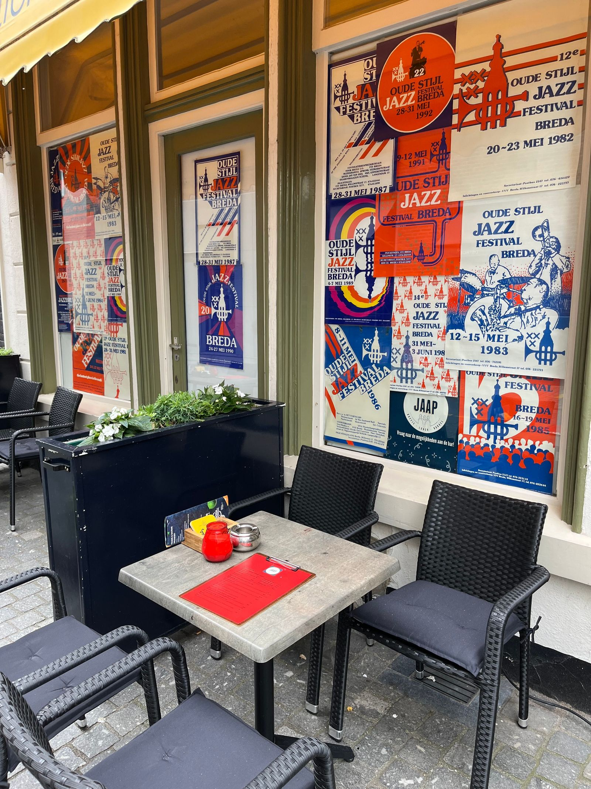
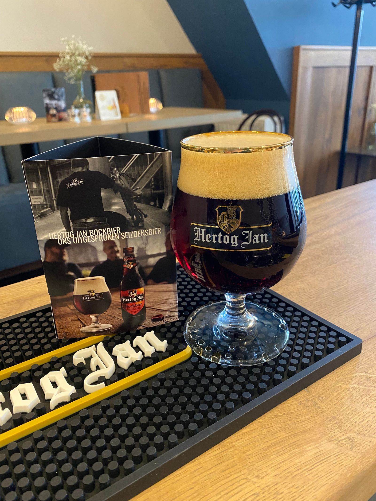
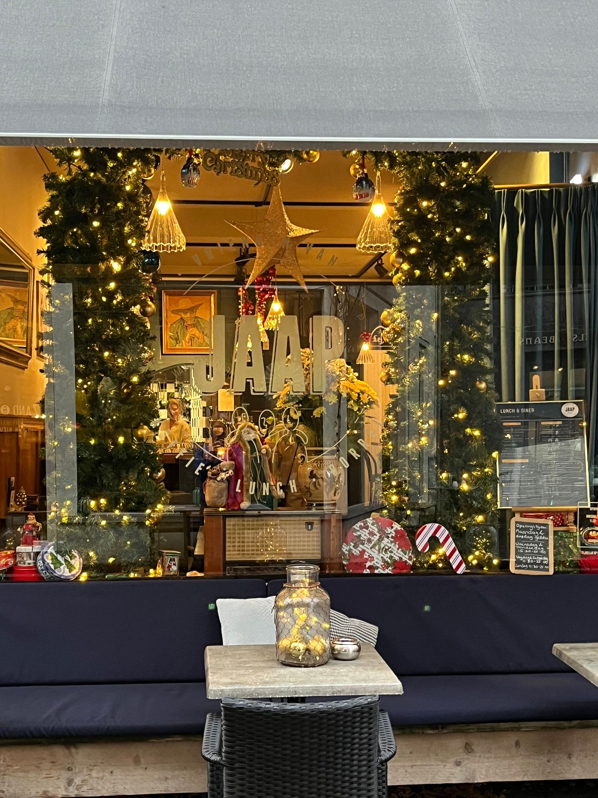

Vrienden van Jaap
Een goede kop koffie, een lekkere lunch of een gezellige borrel. In het café of buiten op het terras aan de Veemarktstraat in Breda.
Iedere donderdag tot en met zondag


Welkom bij Vrienden van Jaap!
Kom je snel langs voor een goede kop koffie, lekkere lunch of een gezellige borrel? Wij staan iedere donderdag tot en met zondag voor jullie klaar! We zien jullie heel graag in ons mooie café of buiten op het terras!
Groetjes, Jaap & Linda
 Koffie
Koffie
 Lunch
Lunch
 Borrel
Borrel
De kaart
Lunch van 12:00 tot 15:30, diner van 17:00 tot 20:30, en borrelhapjes erbij. Heb je een voedselallergie? Vraag naar onze allergenenkaart.
Lunch
12:00 – 15:30
Meergranen desembrood
- Tonijnsalade8,95
met kappertjes & zoetzure uitjes
- Gehaktbal10,95
huisgemaakte gehaktbal in jus, geserveerd met mosterd
- Runderkroketten11,95
met mosterd & truffelmayonaise
- Lauwwarme geitenkaas vega11,95
met walnoten, druiven & honing-mosterddressing. Optie: bacon
- Kaaskroketten vega12,95
met mayonaise & chilisaus
Sandwichbrood wit
- Tosti ham kaas6,95
geserveerd met ketchup
- Tuna melt7,95
tosti met tonijnsalade, kaas & kappertjes
Salades
geserveerd met brood & boter
- Krokante kip13,95
salade met warme krokante kip, walnoten en honing-mosterddressing
- Geitenkaas vega14,95
salade met lauwwarme geitenkaas, walnoten en honing-mosterddressing. Optie: bacon
Warme gerechten
- Tomatensoep vega7,95
geserveerd met brood. Optie: runder gehaktballetjes
- Linzen Curry Pie vega12,50
hartig taartje met linzen, paprika en doperwten in een milde Indiase curry, met frisse salade & kroepoek. Optie: friet en mayonaise +2,75
- Beef Rendang Pie13,50
hartig taartje met Indonesisch gekruid rundvlees en boontjes, met frisse salade & kroepoek. Optie: friet en mayonaise +2,75
- Kipsaté15,75
saté van kippendij met satésaus, frisse salade, friet en mayonaise & kroepoek
- Stoofvlees17,50
runderstoofvlees met frisse salade, friet en mayonaise
- Daghap11,50
iedere week een ander gerecht, vraag ons wat er deze week op het menu staat!
Tip van Jaap: 12 uurtje vega13,50
Tomatensoep, 1 boterham met rundvleeskroket en 1 boterham met tonijnsalade.
Vegetarisch: tomatensoep, 1 boterham met kaaskroket en 1 boterham met geitenkaas.
Borrelhapjes
zomer 2026
- Vriendenplank voor 225,50
oude kaas, serranoham, olijven, noten, brood met aioli, yakitori spiesjes, torpedo garnalen, kaasstengels, samosa’s
- Bittergarnituur “Oosters”, 12 stuks12,50
gyoza’s, samosa’s, rendang kroketjes, torpedo garnalen
- Bittergarnituur “Hollands”, 12 stuks12,50
mini frikandellen, bitterballen, krokante kip, kaasstengels
- Olijven & noten5,25
- Brood met aioli en olijventapenade7,50
- Friet met mayonaise5,75
- Portie oude kaas7,50
- Portie serranoham8,50
- Yakitori spies (kip), per stuk1,95
- Bitterballen 8 st9,25
- Kaasstengels 8 st vega9,25
- Gyoza 8 st vega8,95
- Krokante kip 8 st9,95
- Rendang kroketjes 8 st11,95
- Torpedo garnalen 8 st7,95
- Mini frikandellen 12 st7,50
- Vlammetjes 8 st11,95
Iets te vieren? Een verjaardag, jubileum, bedrijfsborrel? Vraag naar de mogelijkheden aan de bar.
Diner
17:00 – 20:30
Warme gerechten
- Tomatensoep vega7,95
geserveerd met brood. Optie: runder gehaktballetjes
- Linzen Curry Pie vega12,50
hartig taartje met linzen, paprika en doperwten in een milde Indiase curry, met frisse salade & kroepoek. Optie: friet en mayonaise +2,75
- Beef Rendang Pie13,50
hartig taartje met Indonesisch gekruid rundvlees en boontjes, met frisse salade & kroepoek. Optie: friet en mayonaise +2,75
- Kipsaté15,75
saté van kippendij met satésaus, frisse salade, friet en mayonaise & kroepoek
- Stoofvlees17,50
runderstoofvlees met frisse salade, friet en mayonaise
- Daghap11,50
iedere week een ander gerecht, vraag ons wat er deze week op het menu staat!
Kindermenu
- Kindermenu7,95
friet met mayonaise en een snack: runderkroket, frikandel of vier kipnuggets
vega = vegetarisch
Reserveren
Reserveren kan voor de lunch op zaterdag en zondag, tussen 12:00 en 15:00.
Voor de borrel of een hapje in de avond kun je niet reserveren: je kunt gewoon binnenlopen. Wil je borrelen met een groep groter dan 12 personen? Neem dan even contact met ons op.
Iets te vieren?
Een verjaardag, jubileum, huwelijk, wat je maar wilt! Bij Vrienden van Jaap kun je een besloten feest vieren.
- Gezelschap
- 40 tot 55 personen
- Zaterdagavond
- vanaf 20:30
- Zondagmiddag
- vanaf 16:00
Neem contact met ons op over je wensen, dan kijken we of we er samen een mooi feest van kunnen maken!

Route & contact
Veemarktstraat 67
4811 ZD Breda
Parkeren
Je kunt je auto het beste parkeren op parkeerterrein Beyerd-Vlaszak (€ 2,30 per uur, € 14,00 per dag). Vanaf daar loop je in nog geen 5 minuten bij ons naar binnen!
Open
Iedere donderdag tot en met zondag.
Lunch 12:00 – 15:30, diner 17:00 – 20:30.
Gesloten van 31 december 2026 tot en met 4 februari 2027.